사용가이드
권한별 사용 방법
역할을 선택하면 순서대로 사용법을 안내합니다.
STEP 1
교회 가입 및 승인 대기
가입 신청을 통해 교회 정보를 등록하고, 승인을 기다립니다.
- 교회 이름·주소 입력 (다음 우편번호 검색 연동)
- 이용약관 및 개인정보처리방침 동의
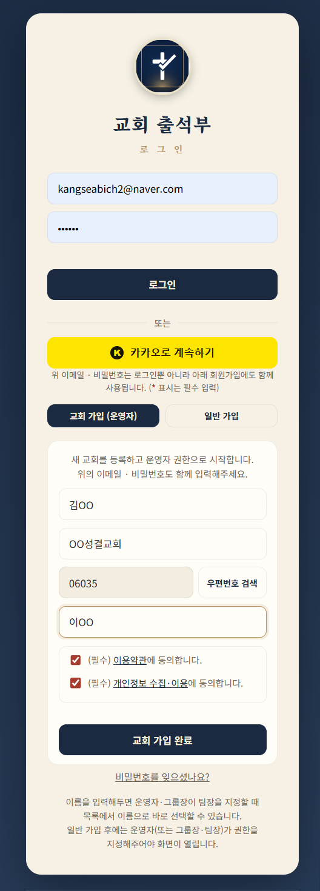
교회 가입 신청 화면
STEP 2
그룹 구조 만들기
교회 조직에 맞춰 그룹을 만들고, 각 그룹 아래 팀을 구성합니다.
기본 카테고리 빠르게 시작하기를 통해 쉽고 빠르게 생성도 가능합니다.
- 그룹 생성 → 그룹장 지정
- 그룹 내 팀 생성 → 팀장 지정
.png)
그룹 간편생성
 생성후 결과화면.png)
그룹/팀 관리 화면
STEP 3
초대 링크로 그룹장 · 팀장 승인
- 초대 링크를 공유해 그룹장·팀장이 스스로 가입하도록 합니다.
- 승인 알람을 클릭하면 가입한 사람에게 권한을 부여할 수 있습니다.
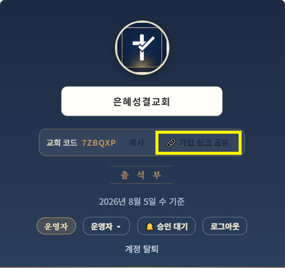
초대 링크 화면

운영자 그룹장 승인
STEP 4
전체 출석 현황 및 통계 확인
- 교회 내 모든 팀 출석 현황 (조회)
- 이번 달 생일자 (조회)
- 중요 기도 제목 (조회)
- 팀별 상세 / 출석 통계
(클릭 시 상세 화면으로 이동)

운영자 대시보드 화면 1
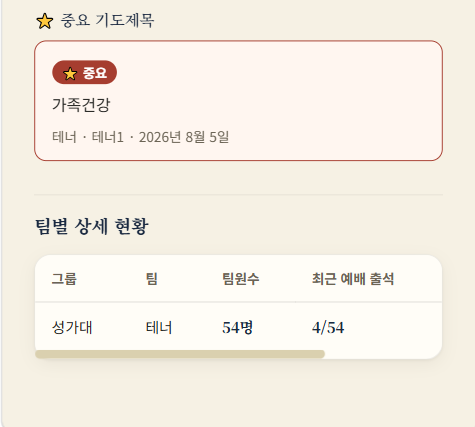
운영자 대시보드 화면 2
STEP 5
교회 설정
- 교회 정보를 수정 할 수 있습니다.
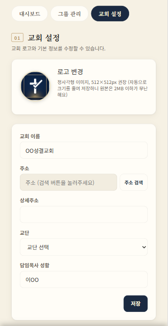
교회 정보 설정 화면
STEP 6
공통운영자 지정
교회가입을 한 사람은 운영자이다.
운영자 권한을 공유할 수 있다.

공동 운영자 지정 1

공동 운영자 지정 2
STEP 1
초대 링크로 가입하기
운영자에게 받은 초대 링크로 접속해 그룹장 계정을 만듭니다.
- 가입시 일반가입으로 진행하고 그룹장 역할과 해당 그룹을 선택합니다.
- 가입신청을 하면 운영자에게 승인 알람이 가고 운영자가 승인하면 그룹장권한으로 접속이 됩니다.
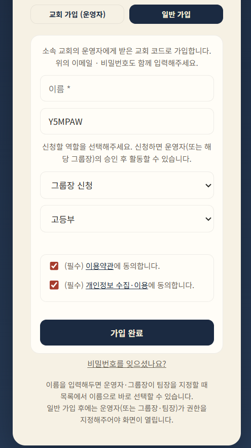
그룹장 가입 화면

그룹장 승인대기
STEP 2
팀 구성
그룹 내 팀을 생성하고 관리한다.
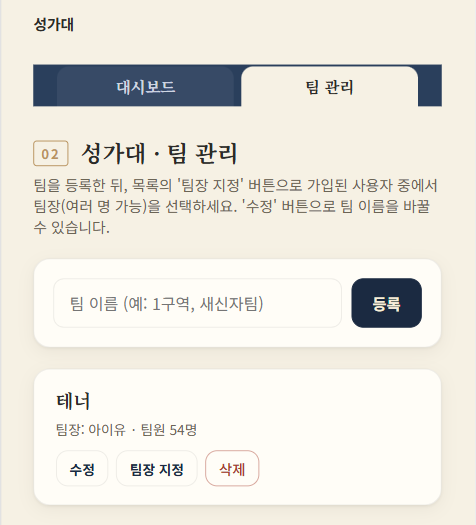
팀 관리 화면
STEP 3
팀장 승인
팀장으로 가입한 사람을 승인처리 한다.
- 팀장으로 가입한 사람을 승인처리
(승인대기를 누르면 목록이 나온다) - 그룹장이 직접 팀장을 지정한다.
(팀장 지정을 누르고 나오는 팝업에서 지정한다)
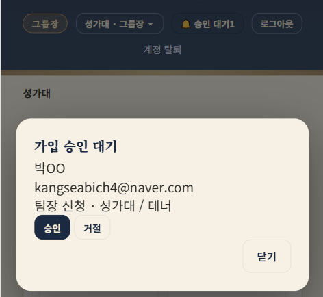
그룹장-승인화면
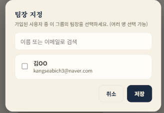
팀장-지정
STEP 4
그룹 출석 체크 및 확인
- 그룹 내 모든 팀 출석 현황 (조회)
- 이번 달 생일자 (조회)
- 중요 기도 제목 (조회)
- 행사 일정 관리
- 팀별 상세 / 출석 통계
(클릭 시 상세 화면으로 이동)

그룹장 대시보드 1

그룹장 대시보드 2
STEP 1
초대 링크로 가입하기
그룹장에게 받은 초대 링크로 접속해 팀장 계정을 만듭니다.
- 가입시 일반가입으로 진행하고 팀장 역할과 해당 팀을 선택합니다.
- 가입신청을 하면 그룹장에게 승인 알람이 가고 그룹장이 승인하면 팀장권한으로 접속이 됩니다.
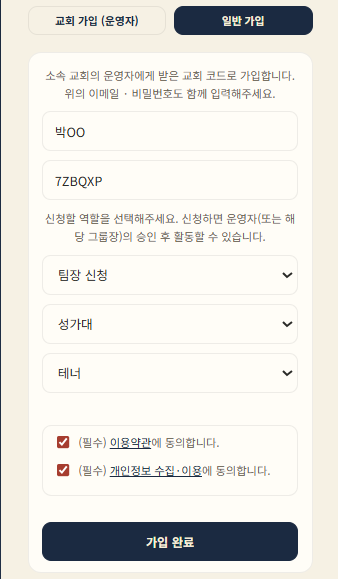
팀장 가입 화면

팀장-승인대기
STEP 2
팀원 명단 관리
내 팀에 속한 성도를 추가·수정하거나, 엑셀 파일을 올려 팀원 명단을 한 번에 등록할 수 있습니다.
- 팀원 개별 추가·수정·삭제
- 엑셀 업로드로 팀원 일괄 등록
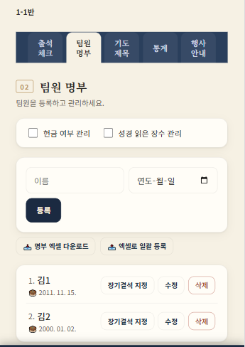
팀원 명단 관리 (화면 1)

팀원 명단 관리(엑셀 업로드) (화면 2)
STEP 3
매주 출석 체크
이름을 눌러 출석 도장을 찍듯 간편하게 출석을 기록합니다.
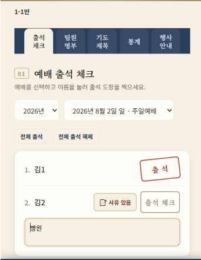
출석 체크 화면 (화면 1)
출석 체크 화면(엑셀 업로드) (화면 2)
STEP 4
출석 통계화면
해당 팀에 등록된 인원과 진행된 예배수
이번달 생일자 현황
팀원들에 대한 주차별/팀원별 출석현황
(주차를 선택하면 해당 주차 출석 화면으로 이동)
연도별 개근,정근 현황
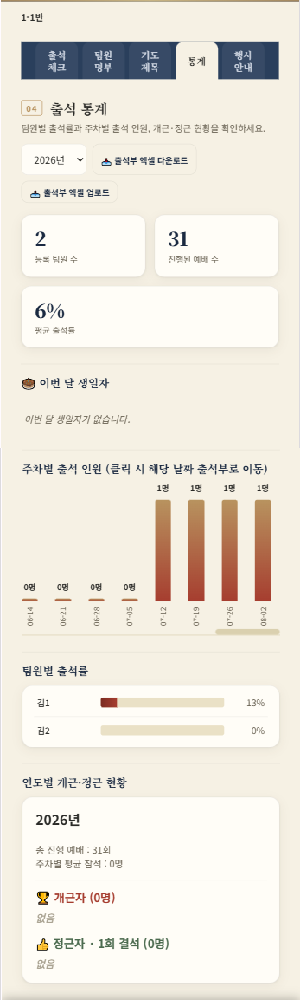
출석 통계 화면
ETC
기도관리 / 행사안내
팀원의 기도제목을 관리 합니다.
이번달 행사를 조회 할 수 있습니다.
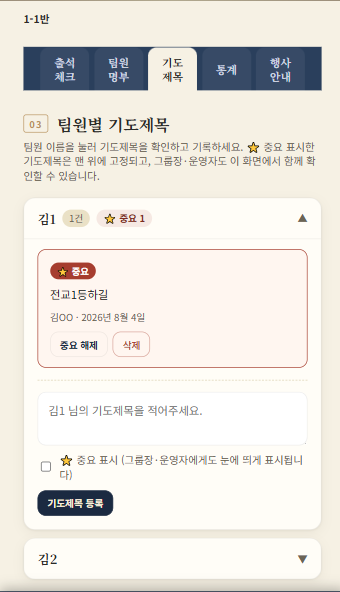
기도관리
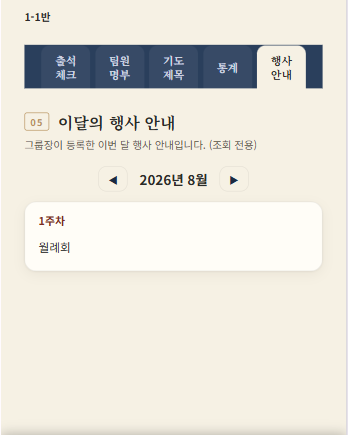
행사조회 (화면 2)